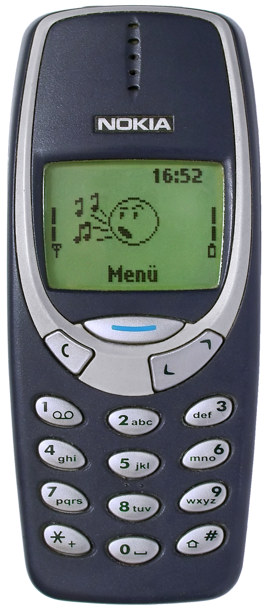
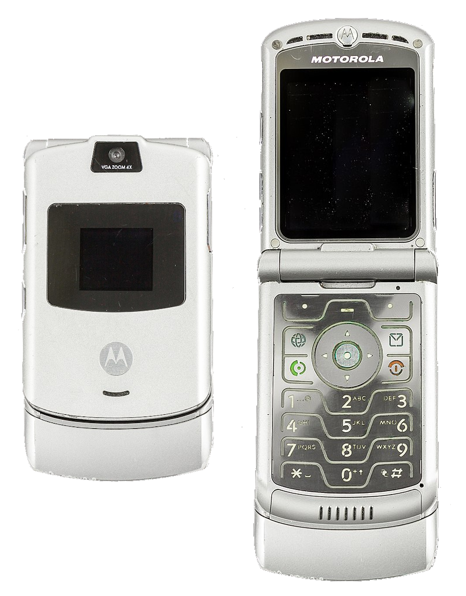
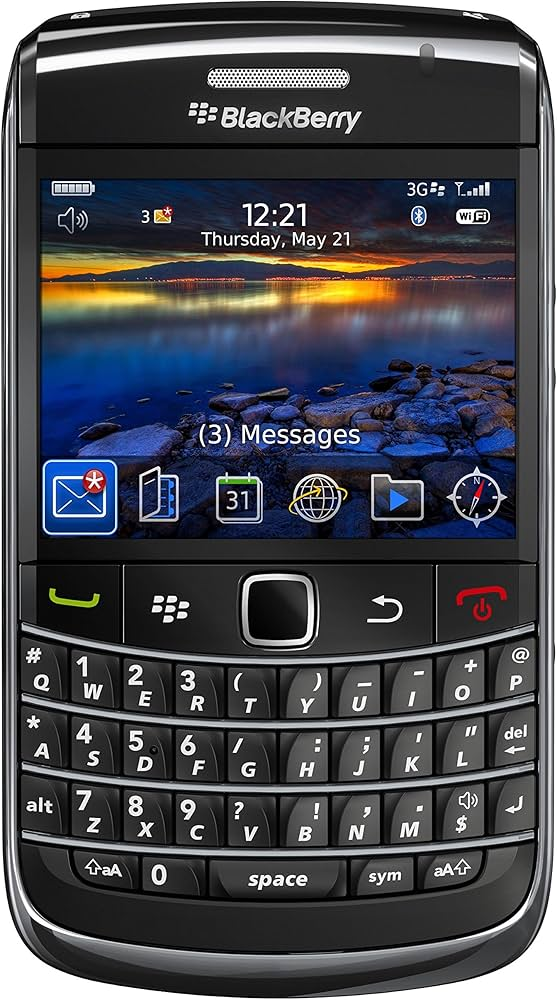
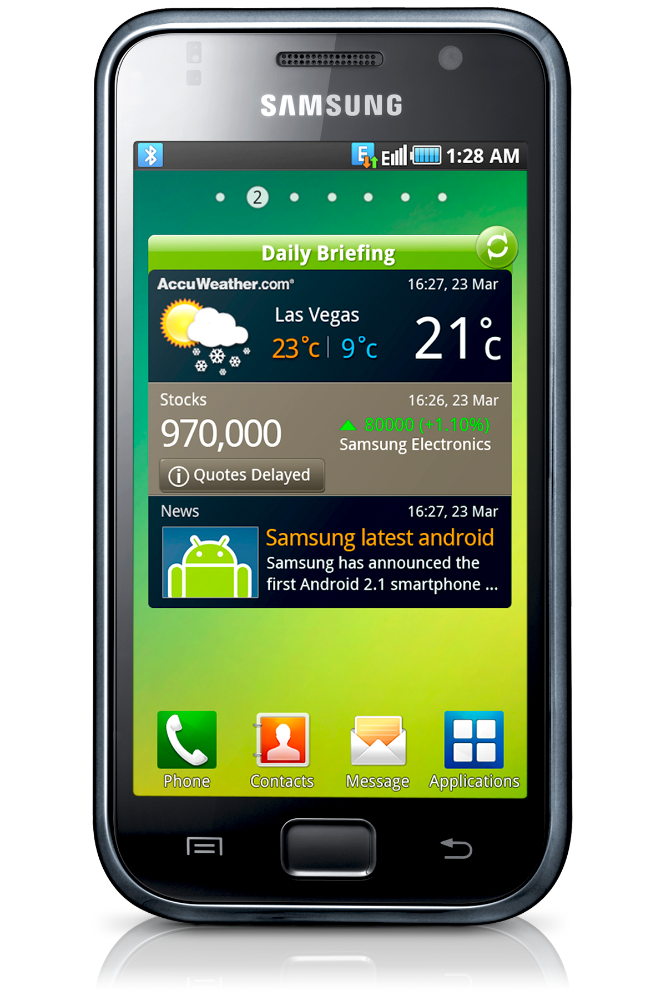
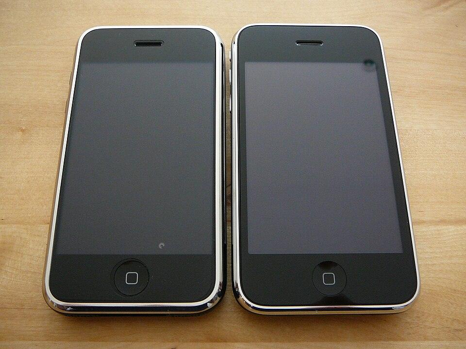
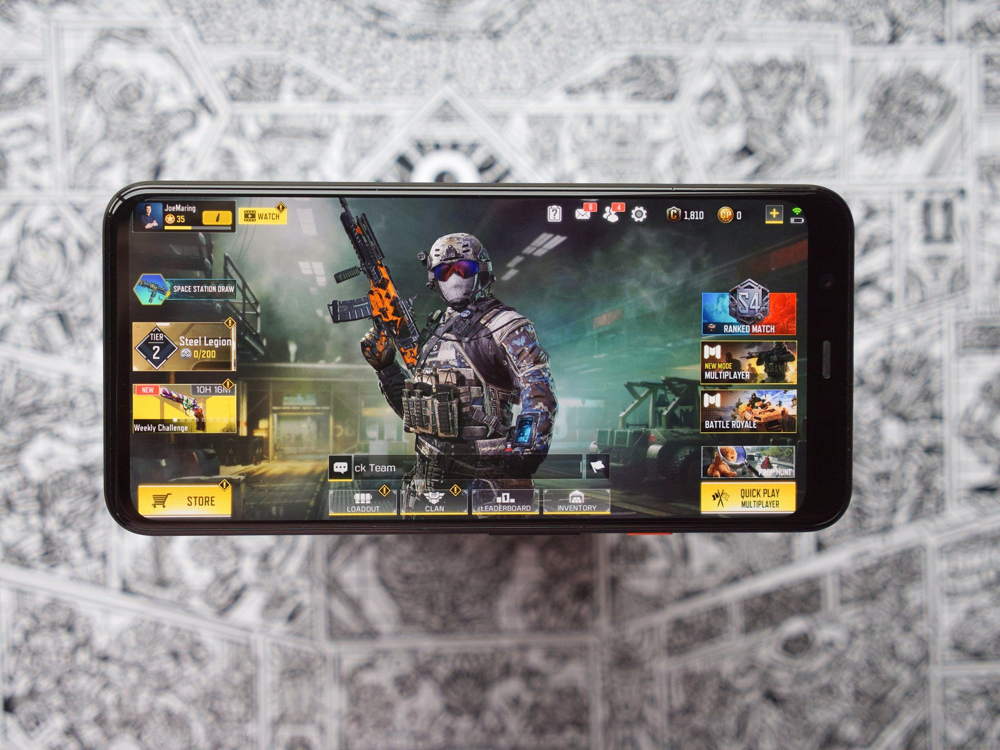
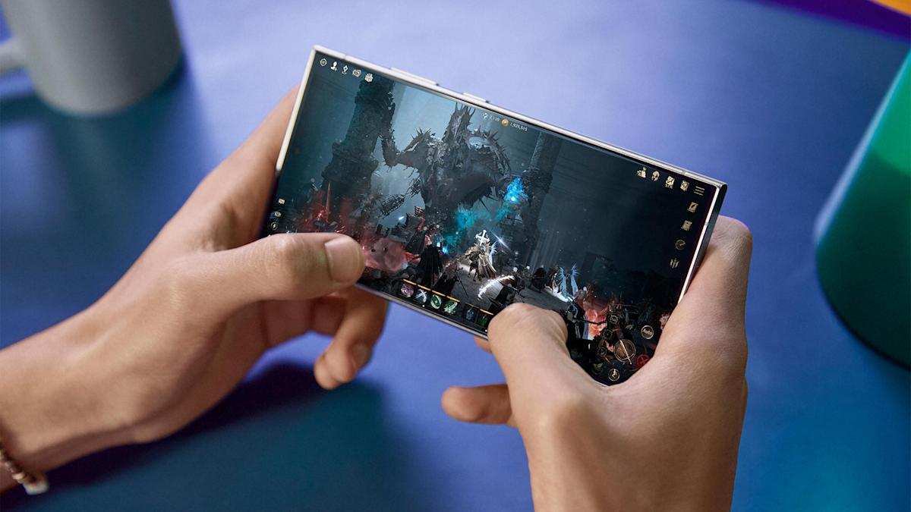
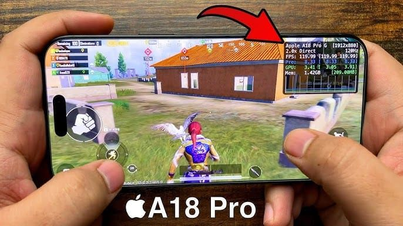
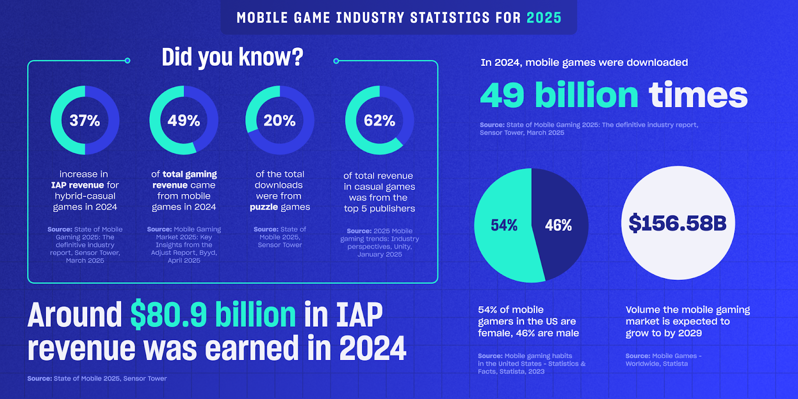

Early Mobile Gaming
Early mobile gaming began on basic cellular phones in the late 1990s and early 2000s, long before modern smartphones. These devices had small monochrome or low-resolution color screens, limited processing power, and physical keypads, which greatly shaped the design of early games.
One of the most iconic early mobile games was Snake, popularized on Nokia devices, where players controlled a growing line across a simple grid. Other early titles were often pre-installed and included puzzle, arcade, and strategy-style games designed to run efficiently on minimal hardware.
As phones evolved, devices like the Motorola Razr and BlackBerry introduced improved screens, basic internet connectivity, and downloadable apps. While multiplayer features were still limited, technologies such as infrared and Bluetooth allowed simple local connections between nearby devices. These early innovations laid the groundwork for the expansive mobile gaming ecosystem seen today.



Smartphone Revolution
The introduction of smartphones in the late 2000s marked a major turning point in mobile gaming. Devices such as the Apple iPhone and early Android phones introduced powerful processors, high-resolution touchscreens, and user-friendly interfaces that significantly expanded what mobile games could achieve. Unlike earlier phones with physical buttons and limited displays, smartphones allowed for more immersive and visually complex gaming experiences.
One of the most important innovations during this period was the rise of digital app stores, including Apple’s App Store (2008) and Google Play. These platforms made it easy for developers to distribute games globally while allowing users to instantly download and update content. This removed many of the barriers that previously limited mobile gaming and opened the door for rapid growth in both casual and competitive multiplayer games.
Improved internet connectivity through Wi-Fi, 3G, and later 4G networks also played a key role in expanding multiplayer capabilities. Players were no longer limited to local connections and could instead interact with others around the world in real time. Games such as Clash of Clans, Clash Royale, and Among Us demonstrated how mobile platforms could support persistent online worlds, cooperative gameplay, and large-scale competitive communities.
As a result, mobile gaming evolved from simple, standalone experiences into a dominant force in the gaming industry. Smartphones transformed gaming into an always-accessible activity, contributing to the rise of free-to-play models, live service games, and global multiplayer ecosystems that continue to shape the industry today.



Modern Mobile Gaming
Modern mobile gaming represents one of the most significant advancements in the evolution of multiplayer gaming. Today’s smartphones are equipped with powerful processors, high-refresh-rate displays, and advanced graphics capabilities, allowing them to run games that rival traditional console and PC experiences. These improvements have enabled developers to create visually complex, fast-paced, and highly interactive multiplayer environments directly on mobile devices.
High-speed internet connectivity, including 4G and 5G networks, has further transformed mobile gaming by reducing latency and enabling real-time online interactions. Players can now participate in competitive matches, cooperative missions, and large-scale multiplayer battles with users from around the world. Popular titles such as PUBG Mobile, Call of Duty: Mobile, and Fortnite demonstrate how mobile platforms can support dozens of players simultaneously in dynamic, persistent game environments.
In addition to gameplay advancements, modern mobile gaming emphasizes connectivity and community. Features such as matchmaking systems, voice and text chat, friend lists, and live in-game events allow players to remain constantly engaged. Cross-platform play has also become increasingly common, enabling mobile users to compete with players on consoles and PCs, further expanding the global player base.
Monetization models have also evolved, with many mobile games adopting free-to-play structures supported by in-app purchases, seasonal content, and battle passes. This approach has made mobile gaming highly accessible while also supporting ongoing development and long-term player engagement. As mobile hardware and cloud technologies continue to advance, mobile gaming is expected to remain one of the fastest-growing and most influential sectors of the gaming industry.



Mobile Gaming by the Numbers

Original source cited in the infographic: Sensor Tower. (2025, March). State of Mobile Gaming 2025: The definitive industry report.
*IAP stands for In-App Purchases, or money spent within a mobile game on items, upgrades, cosmetics, currency, etc.*